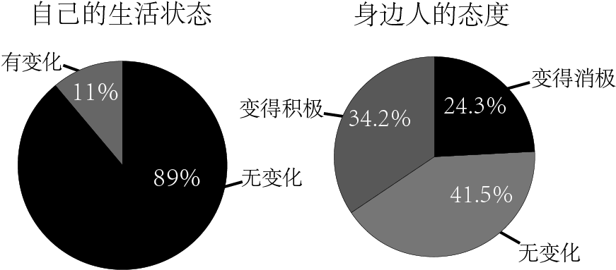

“抑郁症（depression）”，这一概念，最早在公元前400年，由希波克拉底提出描述此类症状的名词：“忧郁症（melancholia）”，直到19世纪中叶以后，对抑郁症的临床观察与科学研究才逐渐展开，目前在医学上，主要定义为由各种原因引起的以抑郁为主要症状的一组心境障碍或情感性障碍。
抑郁心境在医学上的定义为：一种忧伤，悲哀或沮丧的情绪体验，这种体验不仅普遍存在，而且与许多其他因素有关。
“WHO的调查现显示，心理障碍，是全球仅次于心脏疾病的第二大致残原因，排名在癌症、呼吸系统疾病和感染性疾病之前。在我国，17岁以下的青少年有3.2亿之多，其中约有3000万人收到各种心境障碍和心理问题的困扰。30年间，报告的抑郁症发病率暴增10~20倍，现在仍然呈上升趋势。”
抑郁症症状
每个人的症状类型、程度、频率都可以有很大差异。一些常见的症状：持续的情绪低落、空虚感、焦虑感、悲观、无助、绝望、自责，负罪感，丧失自尊，觉得自己没有任何价值，自暴自弃。过激反应，容易不安。对曾经喜爱的活动丧失兴趣（性欲也是重要指标）。疲劳，精力不足，乏力少动。回避社交场合和社交活动。注意力不集中，记忆力减退，选择困难。失眠，早醒睡不着，或睡眠过量。缺乏食欲或暴饮暴食自杀倾向，尝试自杀。莫名的头疼、身体疼痛、抽筋、消化问题。
确诊前后，患者的生活发生了哪些变化？
大部分患者表示，难以继续工作，生活变得不稳定成为对自己影响最大的事情。这是因为，认知功能障碍广泛存在于抑郁症患者中，特别是执行功能和注意功能障碍。一项纳入1426例抑郁患者的抑郁症序贯治疗研究显示，89.6%的患者注意力难以集中，抑郁症会显著降低患者记忆力、注意力等多方面功能。
抑郁症虽然并不影响患者的总体智力水平，却显著降低了患者在多个认知维度的功能，主要表现为执行功能、注意、记忆和信息加工速度等4个方面的功能受损。患者通常会这样描述自己的感受："我犹豫不决，难做决定"、"我工作时总是走神"、"我什么都记不住"或者是"反应慢，跟不上别人的思路"。
